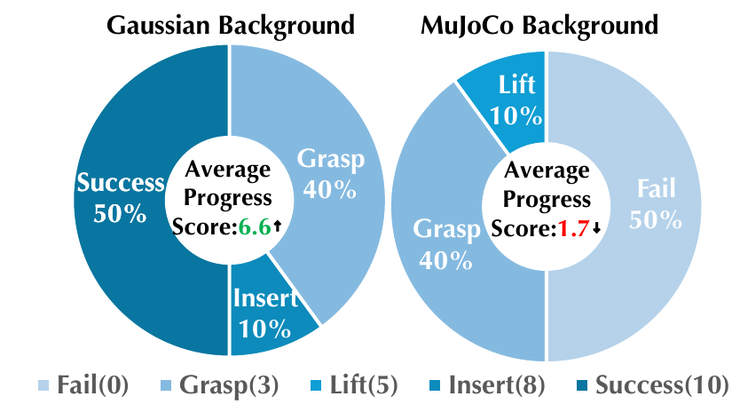

Summary Video
A short overview of the benchmark and its realistic laboratory environments.
docs/media/summary.mp4Abstract
Automating biological laboratories requires robots to perform dexterous tool interactions under realistic visual conditions while handling dynamic experimental phenomena, presenting significant challenges for robotic manipulation. To enable systematic evaluation under these conditions, we introduce AutoBio+, a simulation benchmark and framework for dexterous manipulation in realistic biological laboratory environments. AutoBio+ comprises 14 tasks across 4 robot embodiments, spanning functional tool use, precision manipulation, language-conditioned visual grounding, and instrument operation. We introduce controllable dynamic experimental phenomena, including flames, vapor, and bubbles, to capture the evolving visual conditions of laboratory procedures. To further enhance environmental realism, we develop a hybrid rendering pipeline that integrates interactive simulated foreground objects with Gaussian-splatting backgrounds reconstructed from 6 real laboratory scenes. For efficient large-scale data generation and evaluation, we further build a parallel simulation framework on top of mjlab, proposing Parallel Finite-State Machine (PFSM) and integrating batched rendering with decoupled trajectory replay for demonstration generation and model-independent closed-loop policy evaluation. Our evaluation reveals substantial variation in policy performance across tasks, exposing distinct strengths and weaknesses of current manipulation policies. Real-world experiments further demonstrate a reduced sim-to-real gap, supporting the validity of AutoBio+ for realistic manipulation evaluation.
Method Overview
AutoBio+ brings visual realism and efficient evaluation into the same simulation loop.
Particle visual effects
Lightweight, controllable particles model flames, vapor, and bubbles while remaining decoupled from scene physics.
Hybrid rendering
Interactive MuJoCo foregrounds are composited with Gaussian-splatting backgrounds captured from real laboratories.
Parallel simulation
PFSM policies, batched rendering, and decoupled trajectory replay support efficient data generation and evaluation.

Dynamic Experimental Phenomena
The visual conditions evolve as the robot acts.

Task Benchmark
Four capability categories cover the 14-task suite.

Functional Tool Use 02 tasks
Aspirate with Pipette Shadow
Manipulate Tweezers Wuji
Precision Manipulation 02 tasks
Tighten Tube Cap Aloha
Attach Pipette Tip Shadow
Language-Conditioned Grounding 03 tasks
Load Centrifuge Shadow
Transfer Tube Shadow
Operate Mixer Panel XHand
Instrument Operation 07 tasks
Ignite Bunsen Burner XHand
Close Centrifuge Lid Wuji
Heat & Stir Agar Solution Wuji
Close / Open Thermal Cycler Lid XHand
Two additional tasks details soon
Task Visualizations
Replace each placeholder with a compressed MP4/WebM or GIF when the final clips are ready.
Gaussian Laboratory Scenes
Drag a placeholder to preview the intended free-viewpoint interaction; replace it with the final scene capture later.
Experiments
Evaluation across policies and a real-world UR5e + XHand setup.
We evaluate Diffusion Policy, π0.5, GR00T-N1.7, and Fast-WAM under identical task-specific settings, and validate the visual realism of Gaussian backgrounds in a real-world setup.
